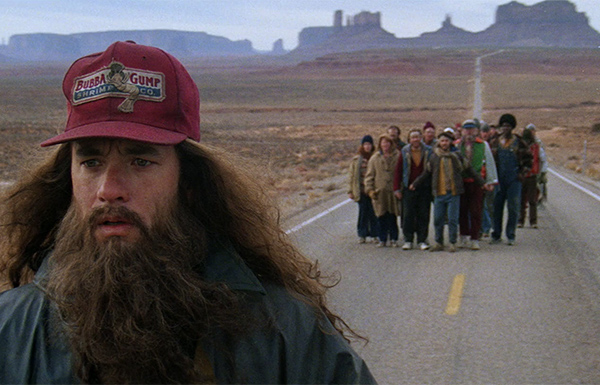

Forrest Gump Summary
Summary of Forrest Gump from IMDB:
The presidencies of Kennedy and Johnson, the Vietnam War, the Watergate scandal and other historical events unfold from the perspective of an Alabama man with an IQ of 75, whose only desire is to be reunited with his childhood sweetheart.
Forrest Gump is a 1994 American comedy-drama film directed by Robert Zemeckis and written by Eric Roth. It is based on the 1986 novel of the same name by Winston Groom and stars Tom Hanks, Robin Wright, Gary Sinise, Mykelti Williamson and Sally Field. The story depicts several decades in the life of Forrest Gump (Hanks), a slow-witted and kindhearted man from Alabama who witnesses and unwittingly influences several defining historical events in the 20th century United States. The film differs substantially from the novel.
Trailer on Youtube:
